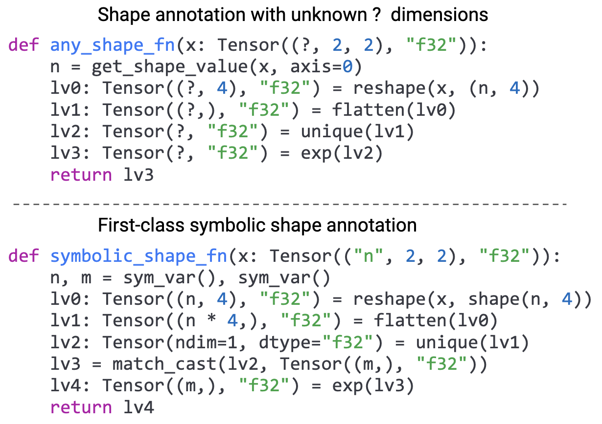
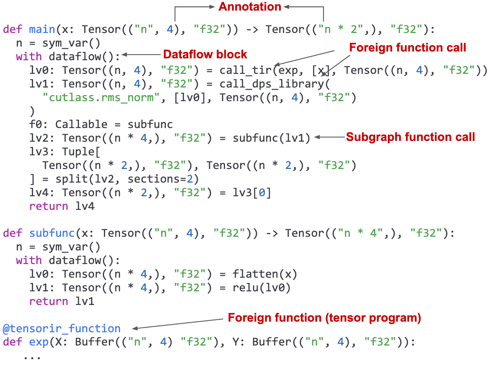
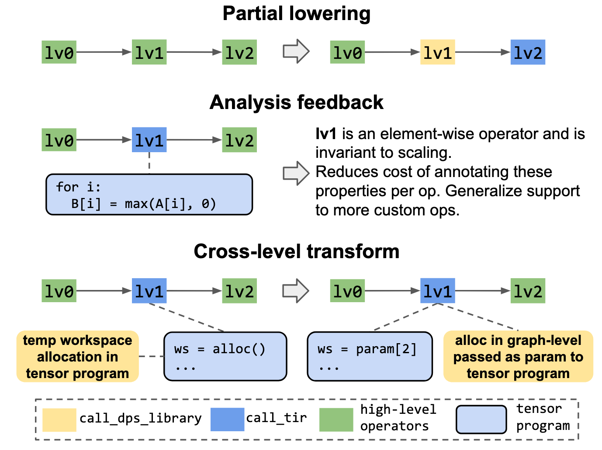
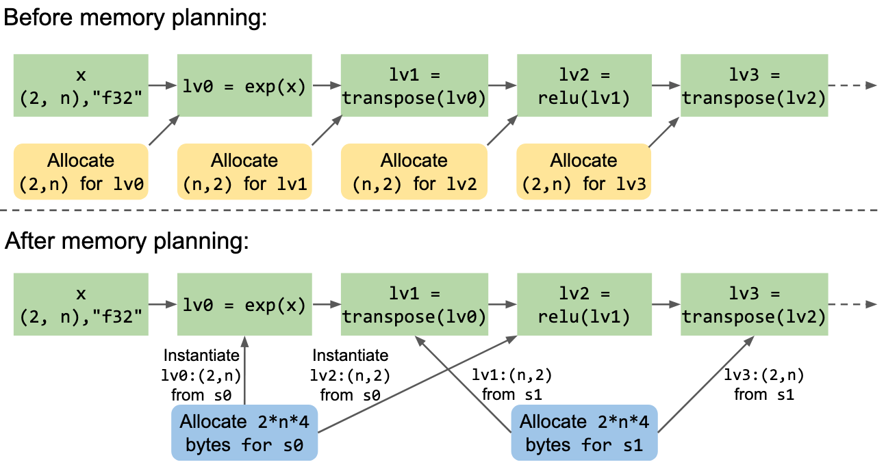
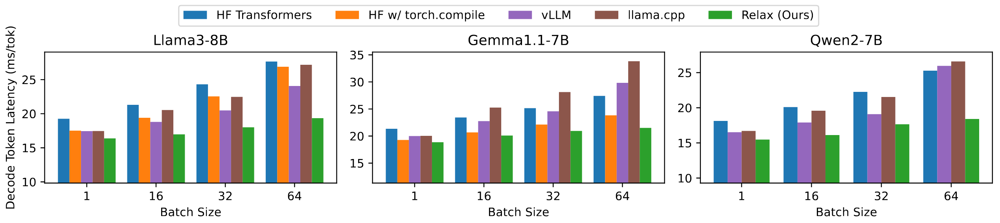
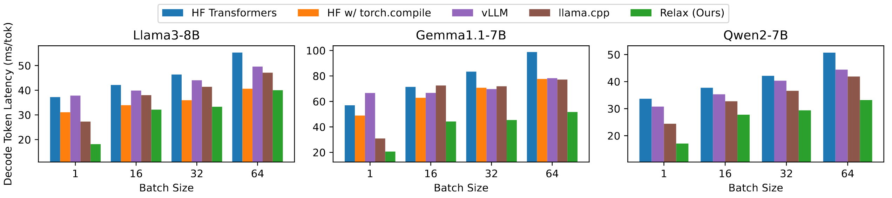
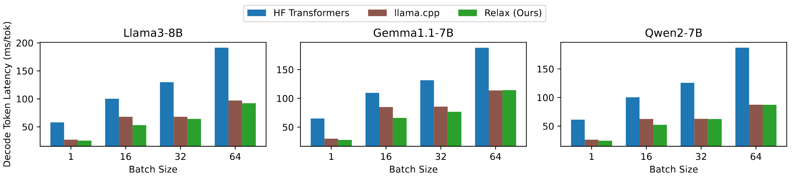
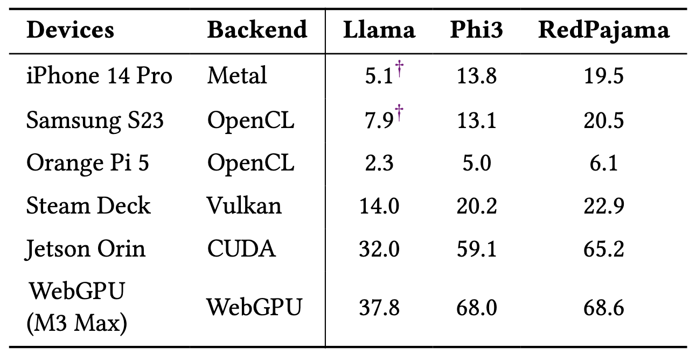

Relax: Composable Abstractions for End-to-End Dynamic Machine Learning
ASPLOS ’25
gpu
llm
attention
memory
systems
Relax: Composable Abstractions for End-to-End Dynamic Machine Learning
Background & Motivation
The Rise of Dynamic Shapes
- Modern ML, especially LLMs, rely heavily on dynamic shapes.
- Variable input lengths
- Dynamic batch sizes
- KV-cache context length
- Demand for universal deployment across diverse hardware: servers, mobile, web browsers.
The Problem with Typical ML Compilers

- Multiple, separate levels of abstraction: Computational Graph, Tensor Program IR, etc.
- Single-shot lowering: A one-way process from high-level to low-level, preventing feedback.
- Limited cross-level optimization.
Handling Dynamic Shapes is Hard

- “Unknown” dimensions: Most compilers treat dynamic dimensions as
?, losing critical relational information. - Lost Information: If one dimension is
n, another might be4*n. Marking both as?prevents optimizations. - Consequence: Inefficient memory planning, missed operator fusion opportunities.
Motivation: A Holistic Compiler Abstraction
- We need an abstraction that can:
- Unify computational graphs, tensor programs, and external libraries.
- Preserve symbolic relations between dynamic shapes throughout the entire compilation process.
- Enable Ahead-of-Time (AOT) compilation for broad deployment on emerging platforms.
System Design of Relax
Relax: Core Principles
- Cross-Level Abstraction
- A single, unified representation for graphs, low-level loops, and library calls.
- Enables incremental lowering and analysis feedback across levels.
- First-Class Symbolic Shapes
- Symbolic variables (
n,m) track dynamic dimensions and their relationships. - Enables powerful, dynamic shape-aware optimizations.
- Symbolic variables (
The Relax Abstraction

- Annotations: Carry type, shape (
Tensor(("n", 4), "f32")), and other structural information. - Dataflow Blocks: Demarcate side-effect-free regions for easier transformation.
- Unified Function Calls: Seamlessly call subgraph functions, low-level tensor programs (
call_tir), and external libraries (call_dps_library).
Cross-Level Optimization Patterns

- Partial Lowering: Make dispatch decisions for just a part of the computation, leaving the rest for later passes.
- Analysis Feedback: Analyze low-level tensor programs to automatically annotate properties on high-level operators.
- Cross-level Transforms: Jointly transform the graph and tensor programs, e.g., lifting a workspace allocation from a kernel to the main graph for global memory planning.
Optimization: Cross-Level Workspace Lifting
- Sometimes a tensor program may allocate intermediate memory inside kernel.
- Moving the allocation outside to the graph-level caller
- Benefits:
- Enables more chance of memory optimization
Optimization: Dynamic Shape-Aware Fusion
- Pattern Analysis: Analyze and classify custom tensor programs (e.g.,
decode_q4) based on their properties. - FuseOps: A graph pass groups tensor program calls into new subgraph functions based on pattern matching.
- FuseTensorIR: A cross-level pass merges the tensor programs within the new subgraph into a single, efficient kernel.
Optimization: Dynamic Shape-Aware Memory Planning

- Symbolic shape analysis allows comparing dynamic tensor sizes (e.g.,
(2, n)and(n, 2)). - This enables static memory planning even for dynamic models.
- Benefits:
- Reduces runtime memory allocation overhead.
- Crucial for memory-constrained devices.
- Enables CUDA Graph offloading, which requires pre-allocated memory.
Evaluation
Environment Setup
- Models: Llama3-8B, Gemma1.1-7B and Qwen2-7B
- GPUs: NVIDIA RTX 4090, AMD Radeon 7900XTX and Apple M2 Ultra
- Baselines:
- HuggingFace Transformers (PyTorch)
- vLLM
- llama.cpp
- Relax (TVM)
LLM Inference Performance: NVIDIA RTX 4090

- Relax delivers performance competitive with state-of-the-art, specialized systems like vLLM.
- Achieves up to 27% lower decode token latency.
- Compiles models once for arbitrary batch sizes and sequence lengths.
Cross-Platform LLM Performance


- Consistently competitive performance across AMD and Apple GPUs.
- Outperforms hand-optimized
llama.cppbaseline on AMD GPUs, especially at batch size 1. - Demonstrates the portability and effectiveness of the compilation approach.
Emerging Platforms

- Deploys 4-bit quantized LLMs to mobile phones, embedded devices, and WebGPU.
- Achieves up to 55% more throughput than
llama.cppon a Samsung S23 by generating optimized GPU code. - Enables GPU-accelerated LLM inference on platforms unsupported by most frameworks.